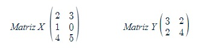
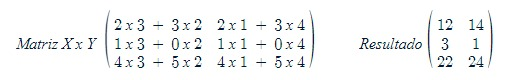

Multiplicação de Matrizes
A multiplicação de matrizes é uma operação matemática que combina elementos de duas matrizes para formar uma terceira matriz resultante. No entanto, ao contrário da soma e subtração de matrizes, a multiplicação de matrizes segue regras mais complexas e envolvem produtos de elementos em diferentes posições das matrizes.
Para que a multiplicação de matrizes seja possível, o número de colunas da primeira matriz deve ser igual ao número de linhas da segunda matriz. Se a primeira matriz tiver dimensão "m x n" e a segunda matriz tiver dimensão "n x p", a matriz resultante terá dimensão "m x p". Em outras palavras, o número de colunas da primeira matriz deve ser igual ao número de linhas da segunda matriz.
 